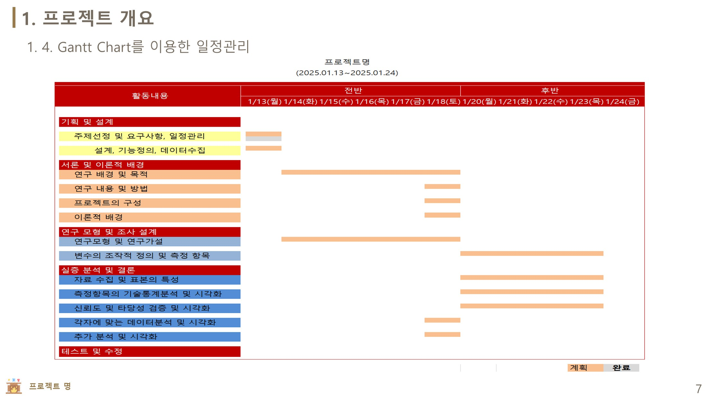
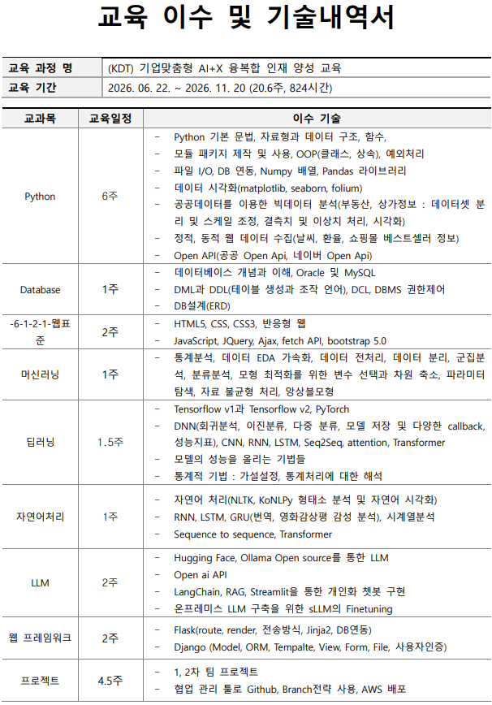

1차 팀 프로젝트
노른자추적
상권 폐업 위험 예측과 창업 업종 추천을 주제로 진행했습니다. 전처리·모델링 노트북, 학습 모델, 발표자료와 웹 구현 자료를 보관합니다.

Python 기반 데이터 분석부터 AI 모델링과 웹 구현까지. 학습한 내용을 프로젝트로 연결하는 과정을 기록합니다.
프로젝트의 목적과 결과를 살펴보고, 저장소에서 구현 자료를 확인할 수 있습니다.
상권 폐업 위험 예측과 창업 업종 추천을 주제로 진행했습니다. 전처리·모델링 노트북, 학습 모델, 발표자료와 웹 구현 자료를 보관합니다.

프로젝트가 정리되면 문제 정의, 구현 과정과 결과를 함께 소개하겠습니다.
(KDT) 기업맞춤형 AI+X 융복합 인재 양성 교육
개발 기초부터 AI 모델링, LLM과 팀 프로젝트까지 이어지는 학원의 교육 계획입니다.
문법·자료구조·함수·OOP, 파일 I/O, NumPy·Pandas, 시각화, 공공데이터 분석·수집, Open API
Oracle·MySQL, DML·DDL·DCL, DBMS 권한 제어, ERD 설계
HTML5·CSS·반응형 웹, JavaScript·jQuery·Ajax·fetch API, Bootstrap 5
통계·EDA, 전처리·데이터 분리, 회귀·분류·군집, 변수 선택·차원 축소, 최적화·불균형 처리·앙상블
TensorFlow·PyTorch, DNN·CNN·RNN·LSTM, Seq2Seq·Attention·Transformer, 모델 저장·콜백, 가설 검정
NLTK·KoNLPy, 형태소 분석·시각화, RNN·LSTM·GRU, 번역·감성 분석·시계열, Seq2Seq·Transformer
Hugging Face·Ollama, OpenAI API, LangChain·RAG·Streamlit, 개인화 챗봇, sLLM 파인튜닝
Flask 라우팅·렌더링·Jinja2·DB 연동, Django Model·ORM·Template·View·Form·File·인증
1·2차 팀 프로젝트, GitHub 협업·브랜치 전략, AWS 배포

교육과정의 강의 자료와 실습 코드, 학습 노트를 주제별로 정리합니다.
Python, HTML·CSS, JavaScript와 DBMS 실습을 통해 개발 기초를 쌓습니다.
기초 실습 보기 ↗데이터 분석과 모델 학습을 실습하고, 프로젝트에서 전처리와 예측 모델로 연결합니다.
머신러닝 실습 보기 ↗자연어처리와 LLM 관련 실습 자료를 보관하고 응용 방법을 학습합니다.
LLM 실습 보기 ↗KDT 기업맞춤형 AI-X 교육과정에서 Python 기반 개발과 AI 모델링을 학습하고 있습니다. 이 공간에서는 학습 자료와 프로젝트 결과를 연결해 보여줍니다.
GitHub에서 더 보기 ↗